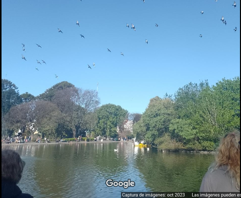
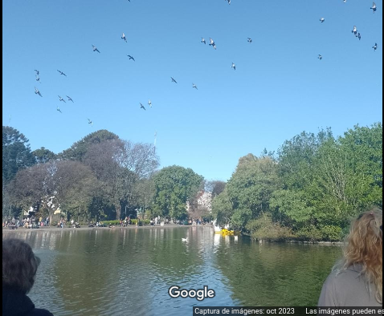

A pesar de ser creado por una orden de 1909 dentro de la mayor urbe de nuestro país, este parque no solo nació y se establecio como un punto de referencia, sinó que incluso ganó fama entre locales y visitantes teniendo un interes turistico; siendo el albergue de cien años de historia para nada solitaria de parejas que nacieron, jugaron y crecieron en sus caminos, por tres generaciones, así como el fruto de aquellas, cuyos pies tambien recorrieron los mismos caminos
Dentro de los terrenos del Parque se localizan Contrucciones de gran importancia, como el Hospital de Oncologia Marie Curie El Anfiteatro Eva Perón, el Museo de Ciencias Bernardino Rivadavia, el Instituto de Zoonosis Louis Pasteur, y una gran cantidad de asociaciones civiles, educativas y de apoyo asientan su sede en tan emblematico lugar.
Cuando se diseño este lugar se incluyeron variedad de especies de arboles y arbustos ademas de archi conocido cesped, en su lago se encuentran peces ornamentales así como patos y tortugas, ademas de una curiosa variedad de insectos que lograron sobrevivir al agitado transito para llegar a sus aguas